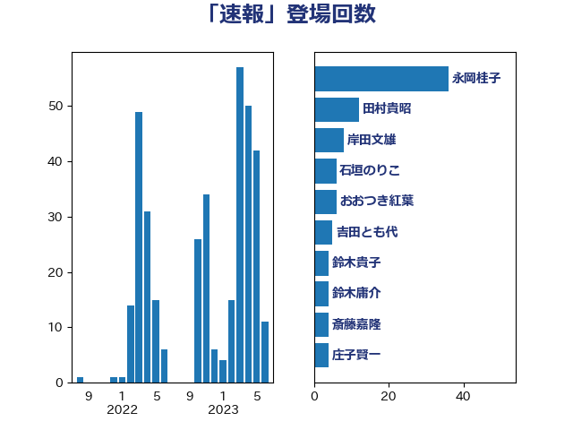

単語「速報」

| 永岡桂子 | 自由民主党 | 36 回 |
| 田村貴昭 | 日本共産党 | 12 回 |
| 岸田文雄 | 自由民主党 | 8 回 |
| 石垣のりこ | 立憲民主党 | 6 回 |
| おおつき紅葉 | 立憲民主党 | 6 回 |
| 吉田とも代 | 日本維新の会 | 5 回 |
| 鈴木貴子 | 自由民主党 | 4 回 |
| 鈴木庸介 | 立憲民主党 | 4 回 |
| 斎藤嘉隆 | 立憲民主党 | 4 回 |
| 庄子賢一 | 公明党 | 4 回 |
| 塩田博昭 | 公明党 | 4 回 |
| 鈴木敦 | 国民民主党 | 3 回 |
| 谷公一 | 自由民主党 | 3 回 |
| 西村康稔 | 自由民主党 | 3 回 |
| 萩生田光一 | 自由民主党 | 3 回 |
| 渡辺周 | 立憲民主党 | 3 回 |
| 森山浩行 | 立憲民主党 | 3 回 |
| 森屋隆 | 立憲民主党 | 3 回 |
| 柚木道義 | 立憲民主党 | 3 回 |
| 松野博一 | 自由民主党 | 3 回 |
| 後藤茂之 | 自由民主党 | 3 回 |
| 宮本徹 | 日本共産党 | 3 回 |
| 古賀千景 | 立憲民主党 | 3 回 |
| 齋藤健 | 自由民主党 | 2 回 |
| 鰐淵洋子 | 公明党 | 2 回 |
| 馬淵澄夫 | 立憲民主党 | 2 回 |
| 逢坂誠二 | 立憲民主党 | 2 回 |
| 足立敏之 | 自由民主党 | 2 回 |
| 西岡秀子 | 国民民主党 | 2 回 |
| 藤巻健太 | 日本維新の会 | 2 回 |
| 緑川貴士 | 立憲民主党 | 2 回 |
| 田中健 | 国民民主党 | 2 回 |
| 漆間譲司 | 日本維新の会 | 2 回 |
| 沢田良 | 日本維新の会 | 2 回 |
| 林芳正 | 自由民主党 | 2 回 |
| 川田龍平 | 立憲民主党 | 2 回 |
| 山崎正恭 | 公明党 | 2 回 |
| 山下貴司 | 自由民主党 | 2 回 |
| 小沢雅仁 | 立憲民主党 | 2 回 |
| 小川淳也 | 立憲民主党 | 2 回 |
| 小宮山泰子 | 立憲民主党 | 2 回 |
| 古賀之士 | 立憲民主党 | 2 回 |
| 勝部賢志 | 立憲民主党 | 2 回 |
| 加藤勝信 | 自由民主党 | 2 回 |
| 住吉寛紀 | 日本維新の会 | 2 回 |
| 中村裕之 | 自由民主党 | 2 回 |
| 黄川田仁志 | 自由民主党 | 1 回 |
| 高良鉄美 | 無所属 | 1 回 |
| 高木宏壽 | 自由民主党 | 1 回 |
| 青木愛 | 立憲民主党 | 1 回 |
| 阿部司 | 日本維新の会 | 1 回 |
| 鈴木俊一 | 自由民主党 | 1 回 |
| 野村哲郎 | 自由民主党 | 1 回 |
| 道下大樹 | 立憲民主党 | 1 回 |
| 赤木正幸 | 日本維新の会 | 1 回 |
| 谷田川元 | 立憲民主党 | 1 回 |
| 西銘恒三郎 | 自由民主党 | 1 回 |
| 西村明宏 | 自由民主党 | 1 回 |
| 藤丸敏 | 自由民主党 | 1 回 |
| 蓮舫 | 立憲民主党 | 1 回 |
| 舩後靖彦 | れいわ新選組 | 1 回 |
| 笠浩史 | 無所属 | 1 回 |
| 笠井亮 | 日本共産党 | 1 回 |
| 竹詰仁 | 国民民主党 | 1 回 |
| 石川香織 | 立憲民主党 | 1 回 |
| 石川大我 | 立憲民主党 | 1 回 |
| 牧山ひろえ | 立憲民主党 | 1 回 |
| 熊田裕通 | 自由民主党 | 1 回 |
| 清水貴之 | 日本維新の会 | 1 回 |
| 浅川義治 | 日本維新の会 | 1 回 |
| 河野義博 | 公明党 | 1 回 |
| 水岡俊一 | 立憲民主党 | 1 回 |
| 柴田巧 | 日本維新の会 | 1 回 |
| 柳ヶ瀬裕文 | 日本維新の会 | 1 回 |
| 松川るい | 自由民主党 | 1 回 |
| 松山政司 | 自由民主党 | 1 回 |
| 東徹 | 日本維新の会 | 1 回 |
| 本庄知史 | 立憲民主党 | 1 回 |
| 末次精一 | 立憲民主党 | 1 回 |
| 末松信介 | 自由民主党 | 1 回 |
| 有村治子 | 自由民主党 | 1 回 |
| 徳永エリ | 立憲民主党 | 1 回 |
| 後藤祐一 | 立憲民主党 | 1 回 |
| 川合孝典 | 国民民主党 | 1 回 |
| 岬麻紀 | 日本維新の会 | 1 回 |
| 山田太郎 | 自由民主党 | 1 回 |
| 小林茂樹 | 自由民主党 | 1 回 |
| 大岡敏孝 | 自由民主党 | 1 回 |
| 大口善徳 | 公明党 | 1 回 |
| 大串博志 | 立憲民主党 | 1 回 |
| 塩村あやか | 立憲民主党 | 1 回 |
| 吉良よし子 | 日本共産党 | 1 回 |
| 吉川赳 | 無所属 | 1 回 |
| 吉川沙織 | 立憲民主党 | 1 回 |
| 吉川元 | 立憲民主党 | 1 回 |
| 勝目康 | 自由民主党 | 1 回 |
| 佐藤英道 | 公明党 | 1 回 |
| 伊藤孝恵 | 国民民主党 | 1 回 |
| 伊波洋一 | 無所属 | 1 回 |
| 仁比聡平 | 日本共産党 | 1 回 |
| 上月良祐 | 自由民主党 | 1 回 |
| 三上えり | 立憲民主党 | 1 回 |
| ながえ孝子 | 無所属 | 1 回 |
| たがや亮 | れいわ新選組 | 1 回 |